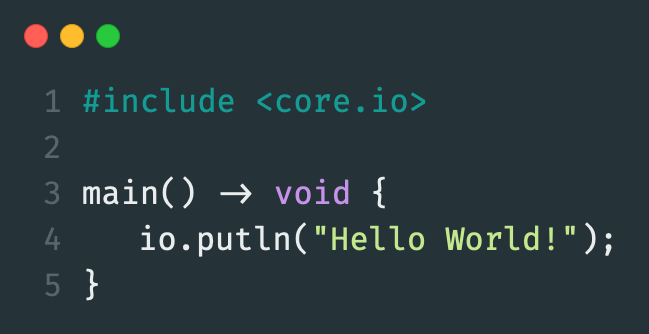
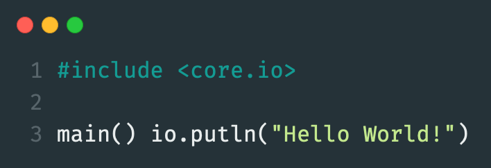

Fux
Return to Homepage
C-Style

C-Style looks more like C++ and runs faster too. It may be harder to write.
P-Style

P-Style looks more like simple Python code, but runs slower in exchange, since Fux has to figure everything else out by itself.
A mix of both of these styles can provide great speeds and great programming experiences with Fux. However, I recommend using the C-Style.